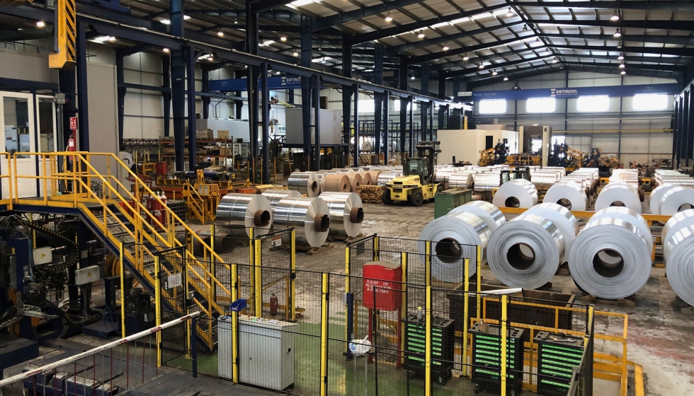
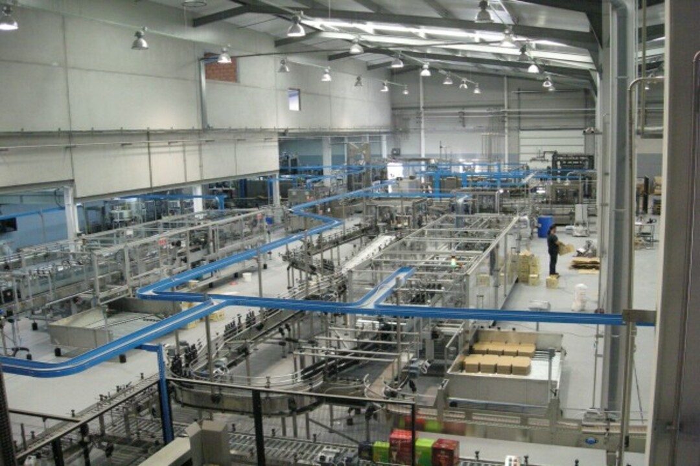

GRUPO LOPEZ BOLAÑOS
En la actualidad Expalum S.L. cuenta con 19 perfiladoras de lamas de aluminio y 8 perfiladoras de cajón que nos pemite producir mas de 120 millones de metros lineales de lamas de aluminio y 1 millon de metros lineales de cajón al año. Tienen lamas de todos los tipos y tamaños, así como la posibilidad de servir los pedidos en más de 200 colores diferentes. Esto, unido a la producción de las otras dos empresas del Grupo Lopez Bolaños, Cristales y Persianas López y Alumasa, nos permite ofrecer una gran variedad de productos relacionados con la persiana.
BODEGAS LOPEZ MORENAS, S.L
López Morenas S.L. es un grupo bodeguero de origen familiar, es una de las principales empresas españolas en producción y comercialización de vinos, zumos y otras bebidas. Posee un reconocido prestigio en el mercado nacional e internacional debido a la calidad de sus productos, la gran adaptación a las necesidades del cliente, como por la variedad de productos y formatos para su venta.
